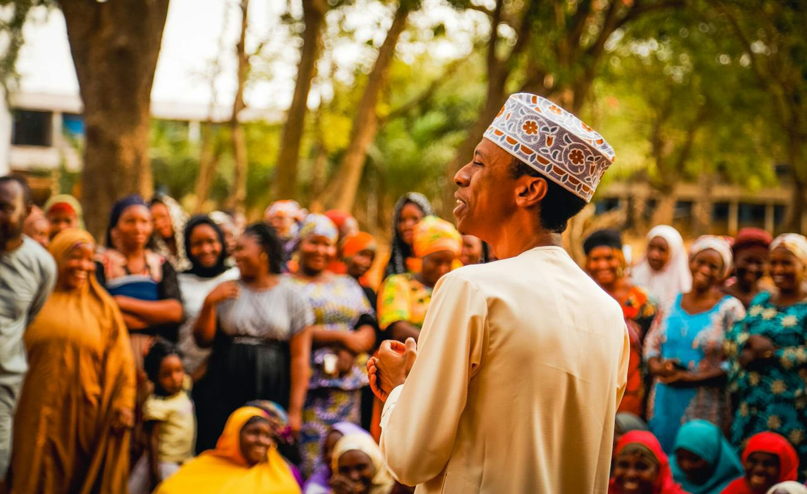

A leader is someone who serves the people they are leading. They are responsible for guiding and directing the community towards a common goal. A good leader is someone who is able to inspire and motivate others to work together towards a common vision. They are also able to make difficult decisions and take responsibility for their actions. A leader should be able to communicate effectively and build strong relationships with the members of the community. They should also be able to listen to the concerns and needs of the people they are leading and work towards finding solutions that benefit everyone.
Becoming a good leader requires developing skills such as communication, decision-making,

This is a leader in a community advicing the members of the community on how to live together in peace and harmony. Fighting against each other would no no greater good for them